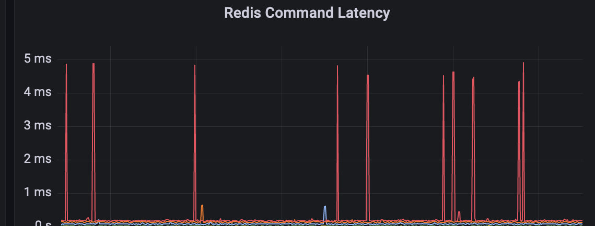

Пишу backend на Java и Spring Boot: проектирую API, держу данные консистентными и разбираюсь, почему запрос идёт две секунды вместо двухсот миллисекунд.
Java-разработчик, backend. Работаю со Spring Boot, PostgreSQL и Redis: проектирую REST API, разбираю медленные запросы, покрываю код тестами и вешаю на сервисы метрики, чтобы проблема была видна раньше, чем о ней напишет поддержка.
Считаю, что задача не закончена, пока к ней нет интеграционных тестов. Отдельно интересно, как сервис ведёт себя под нагрузкой и что с ним происходит, когда отказывает соседний компонент.
@RestControllerAdvice, документация в Swagger.@EntityGraph, добавил индексы под частые выборки, время ответа тяжёлых эндпоинтов упало примерно втрое.Пет-проекты, доведённые до прод-уровня: тесты, метрики, документация, воспроизводимый запуск.

Открыт к предложениям на позицию Java Backend Developer. Отвечаю в течение дня.